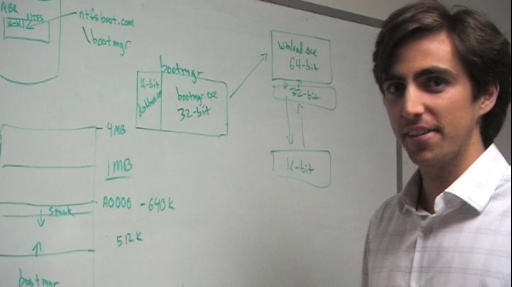
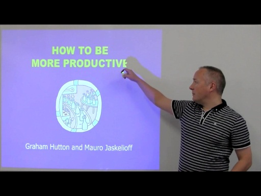
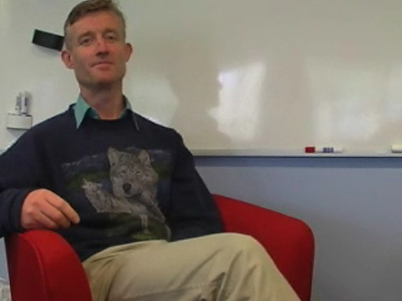

Shows - Going Deep
Shows - Going Deep
Charles Torre travels around Microsoft to meet the company’s leading Architects and Engineers to discuss the inner workings of our core technologies. Going Deep is primarily concerned with how things …
How WSL accesses Linux files from Windows [0:24:59] [2019/05/31]Sven Groot explains how the Windows Subsystem for Linux (WSL) can access and modify Linux files from Windows applications, going into deep dive level details on the underlying architecture and how it…
Bart De Smet: Rx and Cortana [0:56:34] [2014/09/10]It's always great to spend some time geeking out with Bart De Smet. As usual, he has a lot of technical details to share and only so much whiteboard real estate. Bart is still deeply engaged with Rx…
Inside .NET Native [0:39:34] [2014/04/03]What happens when .NET code is statically compiled to machine code (versus runtime compiled via JIT) by the VC++ back end compiler? You get highly optimized binaries that load and run faster…
Nikolai Tillmann and Peli de Halleux: Inside Code Digger [0:32:44] [2013/05/07]Code Digger is a lightweight version of Pex that allows you to explore public .NET methods in Portable Libraries directly from the Visual Studio 2012 code editor. It's a highly simplified and nifty…
Immo Landwerth and Andrew Arnott: Inside Immutable Collections [0:54:18] [2013/03/20]Immutable Collections are a new set of immutable types for .NET. We covered the high level aspects of this new technology a few months back when Erik Meijer interrogated (in his friendly way) the PM…
Programming the Cloud with Actors: Inside ActorFx [0:44:51] [2013/02/21]ActorFx is an MSOpenTech open source project with the goal of providing a non-prescriptive, language-independent model of dynamic distributed objects. This will in turn provide a framework and…
C++ and Beyond 2012: Herb Sutter - atomic<> Weapons, 2 of 2 [1:32:33] [2013/02/12]Herb Sutter presents atomic<> Weapons, 2 of 2. This was filmed at C++ and Beyond 2012. As the title suggests, this is a two part series (given the depth of treatment and complexity of…
C++ and Beyond 2012: Herb Sutter - atomic<> Weapons, 1 of 2 [1:21:12] [2013/02/12]Herb Sutter presents atomic<> Weapons, 1 of 2. This was filmed at C++ and Beyond 2012. As the title suggests, this is a two part series (given the depth of treatment and complexity of…
Inside Windows 8: Chris Stevens - Boot Environment [0:41:14] [2013/01/15]Chris Stevens is a software developer on the Windows kernel team working on the Windows boot environment. Windows 8 boots faster than any other version of Windows. Why? How? Chris begins with the…
Inside Windows 8: Jon Berry - Desktop Activity Moderator and Connected Standby [0:45:50] [2013/01/07]Jon Berry, a veteran Windows engineer, digs into the new way Windows 8 manages processes to support the brave new world of Windows running on various CPU architectures including ARM and ATOM, which…
C++ and Beyond 2012: Herb Sutter - C++ Concurrency [1:15:38] [2013/01/04]Herb Sutter presents C++ Concurrency. This was filmed at C++ and Beyond 2012. Get Herb's slides for this session. Herb says: I've spoken and written on these topics before. Here's…
YOW! 2012: Marko Rodriguez - Graph Systems and Databases [0:43:32] [2012/12/21]Dr. Marko A. Rodriguez is the Founder and CEO of the graph technology firm Aurelius and creator of the graph traversal language Gremlin. He has focused his academic and commercial career on graph…
Inside Windows 8: Greg Colombo - Heap Manager [0:41:28] [2012/12/19]The Windows heap manager has been around as long as Windows has, evolving with each release, getting faster, more reliable, and more secure. In Windows 8, the heap manager improves in two major areas:…
C++ and Beyond 2012: Andrei Alexandrescu - Systematic Error Handling in C++ [1:26:38] [2012/12/10]Andrei Alexandrescu presents "Systematic Error Handling in C++". This was filmed at C++ and Beyond 2012 Abstract: Writing code that is resilient upon errors (API failures,…
Inside Windows 8: Pedro Teixeira - Thread pools [1:05:44] [2012/12/07]Continuing with our series of conversations with engineers in Windows, we meet Pedro Teixeira, a software developer on the Windows kernel team (aka core OS) who has improved the Windows thread pools…
Inside Windows 8: Arun Kishan - Windows App Model [1:07:43] [2012/11/22]Arun Kishan digs into the low level details of Windows 8's new application model. How has Process Lifetime Management (PLM) been reimagined in Windows 8? How does app suspension work, exactly, or,…
Mani Ramaswamy and Peter Sollich: Inside Compiler in the Cloud and MDIL [0:51:02] [2012/11/07]By now you've learned that the CLR, Windows Phone Client, and Windows Phone Services teams got together to develop "Compiler in the Cloud". All Windows Phone 8 apps written in .NET…
Lars Bak and Steve Lucco: Chakra, V8, JavaScript, Open Source [0:42:52] [2012/10/17]Technical Fellow Steve Lucco (architect and lead engineer of IE's Chakra JS VM) and Google's V8 and Dart architect Lars Bak discuss JavaScript, from a virtual machine perspective (implementer's view…
Anders Hejlsberg and Lars Bak: TypeScript, JavaScript, and Dart [0:43:13] [2012/10/12]TypeScript, a typed superset of JavaScript that compiles to idiomatic (normal) JavaScript, is designed to make it easier to write cross-platform, application scale, JavaScript that runs in any browser…
C++ and Beyond 2012: Scott Meyers - Universal References in C++11 [1:23:43] [2012/10/09]Scott Meyers presents "Universal References in C++11". This was filmed at C++ and Beyond 2012. This is the full session in all of its splendor. Huge thanks to Scott for…
C++ and Beyond 2012: Alexandrescu, Meyers, and Sutter - Ask Us Anything [0:58:36] [2012/09/19]Here is the Ask Us Anything panel from C++ and Beyond 2012. Andrei Alexandrescu, Scott Meyers and Herb Sutter take questions from attendees. As expected, great questions and answers! Tune in!…
Alexandrescu, Meyers, Sutter: On Static If, C++11 in 2012, Modern Libraries, and Metaprogramming [0:53:15] [2012/08/21]Channel 9 was invited to this year's C++ and Beyond to film some sessions (that will appear on C9 over the coming months!) and have a chat with the "Big Three": Andrei Alexandrescu,…
Bart De Smet: Rx 2.0 RTM and RTW [1:00:46] [2012/08/17]Rx 2.0 is RTW! Get it here. I caught up with Bart at his whiteboard (of course) to discuss the significance of this release as well address some of the great additions to Rx as outlined below (many of…
Bart De Smet: Rx v2.0 Release Candidate - Time, Error Handling, Event Subscription [1:20:33] [2012/06/22]Bart De Smet is back and he's going to go deep into improvements made to Rx 2.0 RC (so, Rx 2.0 getting close to coming out of the oven!). As you'd expect, Bart and company have been very busy since Rx…
Hewitt, Meijer and Szyperski: The Actor Model (everything you wanted to know, but were afraid to ask) [0:42:34] [2012/04/09]At Lang.NEXT 2012, several conversations happened in the "social room", which was right next to the room where sessions took place. Our dear friend, Erik Meijer, led many interesting…
Bart De Smet: Inside Rx 2.0 Beta [1:28:57] [2012/03/15]Rx v2.0 Beta is here! Who better to tell us all about it - and in great detail at the whiteboard - than Bart J. F. De Smet. This is a long interview, so take your time. Watch it in parts or at one…
C++ AMP: Development Team Roundtable [0:52:56] [2012/02/24]C++ AMP (Accelerated Massive Parallelism) is a small set of open specification language extensions (two of them) and a single library (amp.h) that makes general purpose GPU programming (aka…
C++ AMP: Yossi Levanoni - Architecture and Design [0:34:07] [2012/02/23]C++ AMP (Accelerated Massive Parallelism) is a small set of open specification language extensions (two of them) and a single library (amp.h) that makes general purpose GPU programming (aka…
C++ and Beyond 2011: Scott, Andrei and Herb - Ask Us Anything [0:52:33] [2012/01/03]I was able to attend C++ and Beyond 2011 and it was a tremendous experience. I captured some great footage from the event for C9, like this end-of-last-day panel - Ask Us Anything - with…
Brian Beckman: Hidden Markov Models, Viterbi Algorithm, LINQ, Rx and Higgs Boson [1:03:04] [2011/12/25]It's been WAY too long since we've had Brian Beckman sharing knowledge, insights and perspectives on Channel 9. This changes now! Needless to say, I was incredibly happy to spend an hour with Brian…
C9 Lectures: Graham Hutton - How To Be More Productive [0:46:11] [2011/11/30]It's been far too long since we've had some meaty functional programming content on C9. Luckily, none other than Graham Hutton dropped off a present on our doorstep! Dr. Hutton graciously provided…
C&B 2011 Panel: Herb Sutter, Andrei Alexandrescu and Scott Meyers - Concurrency and Parallelism [0:40:46] [2011/11/15]I was able to attend C++ and Beyond 2011 and it was a tremendous experience. The technical depth and C++ goodness was profound and lasted for 3 whole days (and two evenings). Thanks…
Drawbridge: A new form of virtualization for application sandboxing [0:46:52] [2011/10/18]Drawbridge is a research prototype of a new form of virtualization for application sandboxing. Drawbridge combines two core technologies: First, a picoprocess, which is a process-based isolation…
Bart De Smet: Rx Update - .NET 4.5, Async, WinRT [0:43:33] [2011/10/14]Bart De Smet has been very busy. As you can imagine, the latest release of Rx (v1.11011.11 (Experimental)) supports the latest (developer preview) .NET version, 4.5. In this release, Bart and company…
C&B 2011 Panel: Herb Sutter, Andrei Alexandrescu and Scott Meyers - C++11 [0:58:23] [2011/10/05]I was able to attend C++ and Beyond 2011 and it was a tremendous experience. The technical depth and C++ goodness was profound and lasted for 3 whole days (and two evenings). Thanks…
.NET 4.5: David Kean and Mircea Trofin - Portable Libraries [0:50:40] [2011/09/28] The Portable Class Library project enables you to write and build managed assemblies that work on more than one .NET Framework platform. You can create classes that contain code you wish to share…
CLR 4.5: David Broman - Inside Re-JIT [0:36:48] [2011/09/23] Re-JIT is a new capability in CLR 4.5 that allows modification and recompilation of method-level IL code during runtime without requiring a process restart: so, the JIT runs again without shutting…
Bart De Smet: Interactive Extensions (Ix) [0:57:53] [2011/07/14] Interactive Extensions (Ix) introduces a set of additional LINQ to Objects query operators based on the work done in the Reactive Extensions (Rx). I recently visited the great Bart De Smet to learn…
Abolade Gbadegesin: Inside Windows Phone "Mango" [0:38:02] [2011/07/06] There have been a lot of positive reviews of the upcoming Windows Phone 7 OS release, code named "Mango." This release is a big one. It contains over 500 new features (and over 1000 new…
Mohsen Agsen - C++ Today and Tomorrow [0:42:46] [2011/06/09] The last time we got the chance to talk to Mohsen Agsen, a Microsoft Technical Fellow who runs the Visual C++ engineering team, he put forward the notion of a renaissance taking place in the…
Herb Sutter: C++ Questions and Answers [0:58:59] [2011/06/07] Herb's last appearance on C9 was a relatively short chat with me about C++0x. You wanted more questions asked and some of you thought I was just too soft on Herb. Well, Herb decided that the…
Chris Hawblitzel and Juan Chen: Introduction to Typed Assembly Language (TAL) [0:43:31] [2011/05/12] Typed Assembly Language (TAL) extends traditional untyped assembly languages with typing annotations, memory management primitives, and a sound set of typing rules. These typing rules guarantee the…
Conversation with Herb Sutter: Perspectives on Modern C++(0x/11) [0:45:29] [2011/05/04] I was lucky enough to catch up with Herb Sutter not too long after the FDIS announcement (Final Draft International Standard is complete). As usual when talking to Herb, the conversation is all about…
Anders Hejlsberg: Questions and Answers [1:03:58] [2011/05/03] Anders wanted to hear from you to get a sense of what's on your mind with respect to C#. We asked you for questions and, as usual, you delivered -> this is your interview, Niners. Thanks for the…
Lucian Wischik: Async Compiler - Bug Fixes, Updates and Core Improvements [0:49:18] [2011/04/20] Lucian Wischik is an engineer who spends a great deal of his time making Async magic happen in the C# and VB compilers. With the recent release of Visual Studio Async CTP SP1 Refresh, come several…
Stephen Toub: Async Update - Technical Overview and Building Awaitable Types [0:49:52] [2011/04/15] The recent Visual Studio Async CTP SP1 refresh includes many core improvements, bug fixes and new support for WP7 and VS Express. Architect Stephen Toub digs into some of the updates and explains how…
Parallel Programming for C++ Developers: Tasks and Continuations, Part 2 of 2 [0:30:42] [2011/03/24] The Parallel Computing Concurrency Runtime team write tools for the C++ community that make it easier to write reliable, performant and scalable concurrent and parallel code. In this…
Parallel Programming for C++ Developers: Tasks and Continuations, Part 1 of 2 [0:30:08] [2011/03/10] The Parallel Computing Concurrency Runtime team write tools for the C++ community that make it easier to write reliable, performant and scalable concurrent and parallel code. In this…
Craig Symonds and Mohsen Agsen: C++ Renaissance [0:35:00] [2011/02/09] When you think about all the code executing in the world at any given time, there's a good chance you're thinking about a lot of code written in C/C++ (aka native code). As Mohsen Agsen…
Stephen Toub: Inside TPL Dataflow [1:03:46] [2011/02/03] TPL Dataflow (TDF), System.Threading.Tasks.Dataflow, builds upon the foundational layer for asynchronous and concurrent programming using Tasks provided in TPL in .NET 4. TDF is a complementary set…
C9 Lectures: Dr. Ralf Lämmel - Going Bananas [1:08:33] [2011/01/21] Dr. Ralf Lämmel returns for an exploration of folds, aka bananas. This is lecture 5 in his C9 Lecture series covering advanced functional programming topics. Welcome back, Ralf! We're so happy to…
E2E: Herb Sutter and Erik Meijer - Perspectives on C++ [1:05:26] [2011/01/14] It's not often that we can get two minds of Erik Meijer's and Herb Sutter's caliber together for an impromptu technical conversation during Christmas break at Microsoft... Well, we did and the next…
Programming Streams of Coincidence with Join and GroupJoin for Rx [0:48:14] [2011/01/13] Rx team members and programming super heroes Wes Dyer and Bart De Smet explain the latest powerful additions to Rx: Join and GroupJoin. Wes describes the approach they took to design and implement…
Bart De Smet: MinLINQ - The Essence of LINQ [1:20:01] [2011/01/02] As you must know by now, Erk Meijer and team spend time thinking about and discovering the Essence in things. One year ago today, Bart De Smet blogged about the notion of a core set of LINQ…
Verve: A Type Safe Operating System [1:14:50] [2010/12/08] The Singularity project (an OS written in managed code used for research purposes) has provided several very useful research results and opened new avenues for exploration in operating system…
Orleans: A Framework for Scalable Client+Cloud Computing [1:02:56] [2010/12/03] Orleans is a Microsoft Research (MSR) project and managed (.NET) software framework for building client + cloud applications. As outlined in the recently released paper on the topic: Orleans…
Mark Russinovich: Windows Azure, Cloud Operating Systems and Platform as a Service [0:44:35] [2010/11/26]Mark Russinovich is a Technical Fellow working on the Windows Azure team. His focus is on solving hard problems related to the Fabric Controller, which is in some sense the Windows Azure operating…
Bart De Smet: LINQ to Z3 [1:16:56] [2010/11/24] Bart De Smet is one of the highly talented software engineers on Erik Meijer's team and the chief architect of the LINQ to Anything dream. You should watch his excellent PDC10 session on this…
Rx Update: Async support, IAsyncEnumerable and more with Jeff and Wes [0:35:58] [2010/11/16] At PDC10, you were introduced to Async (new async and await language keywords), a new language feature in C# and VB.NET. At the same time, the Rx team shipped the latest version of their software,…
E2E: Concurrent Programming with Revisions [1:10:38] [2010/11/12] Building applications that are responsive and can exploit parallel hardware poses an important challenge. In particular, enabling applications to execute various tasks in parallel can be…
Mads Torgersen: Inside C# Async [0:47:02] [2010/10/29] Mads Torgersen, C# specification lead, describes the new C# features to improve asynchronous development. You can get an early look at this new async programming model, available as the Async CTP,…
Lucian Wischik: Inside VB.NET Async and Customizing Awaitable Types [0:59:48] [2010/10/29] Lucian Wischik digs into the new VB functions and iterators being developed for asynchronous development. You can get an early look at these new features, available as the Async CTP, today! Give…
Stephen Toub: Task-Based Asynchrony with Async [1:04:21] [2010/10/29] Stephen Toub goes deep into the design and architecture of the new Async features in C# and VB.NET, which rely heavily on .NET’s Task Parallel Library. You can get an early look at this new async…
Mike Swanson: Adobe Illustrator to HTML5 Canvas - Under the Hood [0:54:20] [2010/10/13] The Ai->Canvas plug-in enables Adobe® Illustrator® to export vector and bitmap artwork directly to an HTML5 canvas element that can be rendered in a canvas-enabled browser. The plug-in provides…
Landy Wang - Windows Memory Manager [0:35:24] [2010/09/30]Charles Torre (interviewer) and Michael Lehman (cameraman) continue the "Going Deep: Windows" series with a discussion with Landy Wang, a developer of the oh so important Windows Memory…
C9 Lectures: Dr. Ralf Lämmel - The Quick Essence of Functional Programming [0:54:48] [2010/09/22] We had to cover monads eventually, and there are many great monad tutorials out there (see, for example, here: http://www.haskell.org/haskellwiki/Tutorials#Using_monads). In fact, there are web…
Allen Wirfs-Brock and Chris Wilson: EcmaScript, JavaScript and the Web [0:40:29] [2010/09/22]
ECMAScript is object-based: basic language and host facilities are provided by objects, and an ECMAScript program is a cluster of communicating objects. An ECMAScript object is a collection of…
C9 Lectures: Dr. Ralf Lämmel - Advanced Functional Programming - Evolution of an Interpreter [0:52:38] [2010/09/01]
In part 3 of the Advanced Functional Programming lecture series, Dr. Lämmel focuses on the domain of language interpretation as a method of understanding some important functional programming…
Wes Dyer and Jeffrey Van Gogh: Rx Virtual Time [0:44:21] [2010/08/28]
The latest release of Rx includes new tools for testing reactive programs as well as virtual scheduling. In this video, Jeffrey
and Wes discuss virtual time and virtual schedulers and how they can…
Steve Anonsen and John Rivard: Inside LightSwitch [1:06:14] [2010/08/26]
"Visual Studio LightSwitch is a new tool aimed at easily building data-driven applications, such as an inventory system or a basic customer relationship
management system."Typically,…
C9 Lectures: Dr. Ralf Lämmel - Advanced Functional Programming - Type Classes [0:48:56] [2010/08/18]Welcome to another series of C9 Lectures covering
functional programming. For this series, Dr. Ralf Lämmel has generously taken the time to produce videos for Channel 9 from his office at the…
C9 Lectures: Dr. Ralf Lämmel - Advanced Functional Programming - The Expression Problem [0:47:51] [2010/08/11]"The Expression Problem is a new name for an old problem. The goal is to define a datatype by cases, where one can add new cases to the datatype and new functions over the datatype, without…
Mike Sampson: Inside Rev9 [1:12:21] [2010/07/28]A preview version of the new Channel 9 is now available at
https://preview.channel9.msdn.com. Please file any bugs or suggestions on Connect. Mike Sampson (aka Sampy) has done some stellar work…
Andrew Nurse: Inside "Razor" [0:56:25] [2010/07/16]ASP.NET's latest MVC view engine, "Razor," is optimized for HTML generation using a code-focused templating approach. Razor minimizes the number of characters and keystrokes required in a…
E2E: Whiteboard Jam Session with Brian Beckman and Greg Meredith - Monads and Coordinate Systems [0:39:55] [2010/07/08]In this latest edition of Expert to Expert (and Going Deep), the great Brian Beckman, astrophysicist and software architect, is joined by
Greg Meredith, a mathematician and computer scientist. It's…
E2E: Brian Beckman and Erik Meijer - Co/Contravariance in Physics and Programming, 3 of n [0:36:02] [2010/05/26]Part 3 of the Beckman Meijer Co/Contravariance in Physics and Programming Hypothesis/Challenge has finally arrived, Niners! You learned about Brian Beckman's perspective on
covariance and…
Bart De Smet: Observations on IQbservable - The Dual of IQueryable [0:58:30] [2010/05/19]You first learned about Rx on C9. We've led you through the basic concepts of reactive programming to the deep mathematical foundation behind Rx (interface duality). By now,
you should understand…
STL: Some Underlying Algorithms, Data Structures, and More with Stephan T. Lavavej [0:51:47] [2010/05/05]With the recent release of Visual Studio 2010 and .NET 4/Silverlight 4 (Managed 4), I figured it was time to learn a thing or two about some new
native functionality, specifically in the STL…
Inside SPUR - A Trace-Based JIT Compiler for CIL [0:50:30] [2010/04/16]Computer Scientists and MSR Researchers
Wolfram Schulte,
Herman Venter, Nikolai Tillmann, and Manuel Fahndrich join Erik
Meijer for an Expert to Expert deep dive into the theory and…
Inside IE 9s High Performance JavaScript Engine [0:30:53] [2010/04/10]The IE9 Platform Preview includes the first release of the
new JavaScript engine. This new engine compiles JavaScript source code into high-quality native machine code. It also has a new fast…
Project JSMeter: JavaScript Performance Analysis in the Real World [0:49:35] [2010/03/29]JavaScript is the most widely used programming language on the web. As the great
Douglas Crockford
likes to say, JavaScript is both the world's most popular programming language and the world's…
E2E: Erik Meijer and Leslie Lamport - Mathematical Reasoning and Distributed Systems [0:56:11] [2010/03/10]A distributed system is one in which the failure of a computer you didn't even know existed can render your own computer unusable. -Leslie Lamport.
Leslie Lamport is a computer scientist and…
Erik Meijer and Team: Cloud Data Programmability - Connecting the Distributed Dots [0:33:32] [2010/01/23]When Sven Groot was in town a while ago (this summer?) we dropped by Erik Meijer's world and got a look at what he and his team of superdevelopers are up to (thus there really is no out-of-date…
E2E: Brian Beckman and Erik Meijer - Co/Contravariance in Physics and Programming, 2 of 3 [1:04:50] [2010/01/04]Happy new year! It's hard to believe that it's 2010. To start off the new year, how about some Beckman and Meijer? You recently learned about Dr. Beckman's perspective on
covariance and…
E2E: Brian Beckman and Erik Meijer - Co/Contravariance in Physics and Programming, 1 of 3 [0:20:22] [2010/01/02]Happy new year! It's hard to believe that it's 2010. To start off the new year right, how about some Beckman and Meijer? You recently learned about Dr. Beckman's perspective on
covariance and…
Jeffrey Van Gogh and Bart De Smet: Inside System.Interactive [0:34:55] [2009/12/30] With the recent release of the Reactive Extensions for .NET (Rx) on DevLabs, you’ll hear quite a bit about reactive programming, based on the IObservable<T> and IObserver<T> interfaces. A…
C9 Lectures: Dr. Brian Beckman - Covariance and Contravariance in Physics 1 of 1 [0:44:31] [2009/11/26]By now, you know Brian Beckman given how many times he's been featured on Channel 9 and, well, just how amazing he is. Brian is an astrophysicist and software
architect currently working on a…
E2E: Erik Meijer and Patrick Dussud - Inside Garbage Collection [0:57:02] [2009/11/14]Patrick Dussud is a Technical Fellow at Microsoft who is the author of .NET's garbage collector (GC) - the automatic memory management
infrastructure that makes up most of what is managed in managed…
E2E: Erik Meijer and Burton Smith - Concurrency, Parallelism and Programming [1:04:14] [2009/11/04]
The great
Burton Smith, Microsoft Technical Fellow and an international leader in high-performance computer architecture and programming languages for parallel computing joins functional programming…
E2E: Erik Meijer and Don Box - Perspectives on SOAP, Programming Data and M [0:44:38] [2009/10/29]Don Box is a Distinguished Engineer at Microsoft and has a rich history in the general purpose programming world. You remember SOAP, right? Don was one of the Gang
of Four who designed SOAP. Don was…
Mark Russinovich: Inside Windows 7 Redux [0:53:05] [2009/10/23]Windows 7 is here, available to all for purchase and ships today with new PCs! To celebrate this momentous occasion for Windows and Microsoft, Technical Fellow Mark Russinovich joins me in a…
Visualizing Concurrency: VS 2010 Beta 2 - Parallel Performance Profiling Advancements [0:46:47] [2009/10/20]
In Visual Studio 2010 Beta 1, you were introduced to new analysis and profiling capabilities (Parallel Profiling and Performance Tools) designed to make concurrency understandable and, ultimately,…
Stephan T. Lavavej: Everything you ever wanted to know about nullptr [1:01:44] [2009/10/20]
In C++, 0 is an abused integer. It is used to reflect, well, 0 as a value of type int and it is also used to represent a null pointer... The latter has led to many bugs and confusion over…
Expert to Expert: Rich Hickey and Brian Beckman - Inside Clojure [0:53:56] [2009/10/07]Clojure is a dynamic programming language created by Rich Hickey that targets both the Java Virtual Machine and the CLR. It is designed to be a general-purpose language, combining
the…
E2E: Erik Meijer and Wes Dyer - Reactive Framework (Rx) Under the Hood 2 of 2 [0:37:47] [2009/09/28]Software Developer extraordinaire and language compiler geek Wes Dyer and programming language design guru and LINQ co-creator Erik Meijer dig into the Reactive Framework (Rx). This is part 2 of 2.…
E2E: Erik Meijer and Wes Dyer - Reactive Framework (Rx) Under the Hood 1 of 2 [0:43:07] [2009/09/28]You've already learned a great deal about Erik Meijer's latest programming creation, Rx, right here on Channel 9 (here
and
here, to be precise). Well, wouldn't it be great to get the two key minds…
Expert to Expert: Erik Meijer and Butler Lampson - Abstraction, Security and Embodiment [0:59:44] [2009/09/18]This is a very special episode of
Expert to Expert. We were very fortunate to get some time with renowned computer scientist and Microsoft Technical Fellow Butler Lampson. Butler's impact
on…
Inside Windows 7: RADAR - Windows Automatic Memory Leak Detection [1:02:52] [2009/09/15]RADAR is a memory leak detection technology built into Windows 7 and integrated with Watson (error reporting) and AutoBug (automatic bug filing). It allows Microsoft product teams and third parties to…
Melur Raghuraman: Inside Windows 7 - Diagnostics and Troubleshooting [0:53:12] [2009/09/04]Windows Development Manager Melur Raghuraman and team have taken troubleshooting and diagnostics to a
whole new level in Windows 7. For one thing, Windows 7 uses managed code "natively" as…
Silviu Calinoiu: Inside Windows 7 - Fault Tolerant Heap [0:56:52] [2009/08/25]The Fault Tolerant Heap (FTH) is a subsystem of Windows 7 responsible for monitoring application crashes and autonomously applying mitigations to prevent future crashes on a per application basis. For…
Elliot H Omiya, Larry Osterman and Frank Yerrace: Inside Windows 7 - Audio Stack [1:04:12] [2009/08/11]One of the central engineering and design themes of Windows 7 is efficiency: efficiency in user experience (things work as and when expected, reliably), efficiency in processing, execution,…
Arun Kishan: Inside Windows 7 - Farewell to the Windows Kernel Dispatcher Lock [0:59:08] [2009/08/07]
You've learned about many of the new features of the latest version of the Windows kernel in the
Mark Russinovich Inside Windows 7 conversation here on Channel 9. One of Mark’s favorite kernel…
Kim Hamilton and Wes Dyer: Inside .NET Rx and IObservable/IObserver in the BCL (VS 2010) [0:41:13] [2009/08/05]You
recently learned about Erik Meijer's latest innovation, Rx, here on Channel 9. Clearly, judging by the views and comments on that post, it piqued your interest and curiosity. Wes Dyer, a rock…
Expert to Expert: Erik Meijer and Michael Isard - Inside Dryad [1:06:33] [2009/07/21]Microsoft Research recently announced the availability, under
Academic Licensing, of
Dryad, an infrastructure which allows a programmer to use the resources of a computer cluster or a data center…
Expert to Expert: Brian Beckman and Erik Meijer - Inside the .NET Reactive Framework (Rx) [1:13:03] [2009/07/10]Erik Meijer and team (developer Wes Dyer, in particular) have created a profound and beautiful .NET library that will take managed event based programming to new levels. Of course, many of you wish…
Expert to Expert: Web Programming, JavaScript with Types and Flapjax [1:12:24] [2009/06/24]
Flapjax is a new programming language designed around the demands of modern, client-based Web applications. Its principal features include:
Event-driven, reactive evaluation An event-stream…
Expert to Expert: Gur Kimchi - Inside Bing Maps (aka Virtual Earth) [0:53:33] [2009/06/18]Erik Meijer and I paid a visit to Bing Maps infrastructure architect and Partner Development Manager Gur Kimchi for an Expert to Expert conversation about the design and architecture of Bing Maps. It…
David LeBlanc: Inside SafeInt [0:51:04] [2009/06/17]SafeInt is a C++ header containing the SafeInt class, non-throwing functions to check common operations, and the associated internal mechanisms. SafeInt is currently
used extensively…
Expert to Expert: Inside Bling - A C#-based library to simplify WPF programming [0:52:12] [2009/06/09]Bling is a C#-based library for easily programming images, animations, interactions, and visualizations on Microsoft's WPF/.NET. Bling is oriented towards design
technologists, i.e., designers who…
Raja Krishnaswamy and Vance Morrison: CLR 4 - Inside Type Equivalence [0:58:37] [2009/06/06]You recently learned about CLR 4's support for type equivalence in a
conversation right here on C9 with Raja Krishnaswamy and Jesse Kaplan. The idea of type equivalence and its potential usefulness…
Rick Byers and Simon Hall: CLR 4 - Side-by-Side In-Process - What. How. Why. [0:49:48] [2009/06/04]CLR hosting has always been a hot topic. Consider the case of Windows Shell Extensions and the inability to load more than one CLR version per process being the dagger in the heart of the very idea of…
Louis Lafreniere: Next Generation Buffer Overrun Protection with /GS++ [0:31:59] [2009/06/03]From
the C++ Team Blog: A lot of code written in C and C++ has vulnerabilities that leave their users open to buffer overrun attacks. There are two major reasons for this. One reason…
Erika Parsons and Eric Eilebrecht : CLR 4 - Inside the Thread Pool [0:43:05] [2009/06/02]General purpose thread pools are more complicated to get right than you may think. In CLR 4 (the next version of the VM that powers .NET), the thread pool has made some significant advances in…
Maoni Stephens and Andrew Pardoe: CLR 4 Garbage Collector - Inside Background GC [0:46:38] [2009/05/27]Maoni Stephens is a software developer who spends her time implementing .NET's GC. In fact, she's been working on the GC since the early days of .NET. Andrew Pardoe is the GC PM. The last time we…
VC 10: Stephan T. Lavavej and Damien Watkins - Inside STL [0:59:53] [2009/05/21]
Visual Studio 2010 Beta 1 introduces a number of exciting new features for the C++ developer as we include a selection of goodies from
the upcoming C++0x Standard. We have already…
Vance Morrison: CLR Through the Years [0:44:28] [2009/05/19]CLR Architect Vance Morrison has been very busy working on the future of the CLR, especially as it relates to execution performance and the type system. Some of his latest work is present in the…
John Rose: Static Runtimes and Dynamic Byte Codes [0:35:09] [2009/05/05]John Rose is a virtual machine expert who's been working on the Java Virtual Machine for several years. He's part of the team that is adding multi-language support to the JVM,
specifically, dynamic…
Gilad Bracha: Inside Newspeak and Objects as a Service [0:31:43] [2009/05/01]Lang.NET Symposium 2009 was held on Microsoft's campus (make sure you
watch the talks, which are available for your viewing pleasure). We were of course there and conducted several interviews with…
Expert to Expert - Erik Meijer and Lars Bak: Inside V8 - A Javascript Virtual Machine [0:54:41] [2009/04/30]Lars Bak is a virtual machine master. He and team have created a Javascript VM, V8, that takes Javascript syntax and produces optimized machine code directly. The result is very performant execution…
Expert to Expert: Amitabh Srivastava - Windows Azure and Cloud Computing [1:00:47] [2009/04/14]You first learned about Windows Azure and the
Azure Services Platform at PDC08. Remember that? Yeah. It's been a while since we first unveiled our cloud computing offering. Now that the hysteria…
Expert to Expert: Helen Wang and Alex Moshchuk - Inside Gazelle [0:52:13] [2009/04/08]Microsoft Research was in the news not too long ago regarding the innovative, outside-the-box research being done by MSR scientists on display at the annual MSR TechFest event. One of the stars of the…
Concurrency and Parallelism: Native (C/C++) and Managed (.NET) Perspectives [0:51:33] [2009/03/31]
Parallel Computing Platform team members Stephen Toub, Rick Molloy, Don McCrady and Dana Groff join me for a chat about the differences and similarities in their
conceptual approach to designing…
Erik Meijer and Matthew Podwysocki - Perspectives on Functional Programming [1:07:41] [2009/03/24]Matthew Podwysocki is a senior consultant for Microsoft platform technologies in the D.C. area. He's been programming since he was a child and has a
particular interest and passion for functional…
Expert to Expert: Erik Meijer and Anders Hejlsberg - The Future of C# [1:10:32] [2009/03/04]It's always a pleasure to get a chance to sit down and geek out with Anders Hejlsberg. Anders is a Microsoft Technical Fellow (a Technical Fellow is the highest ranking technical position at…
Expert to Expert: Inside Concurrent Basic (CB) [0:59:42] [2009/02/26]
"Concurrent Basic extends Visual Basic with stylish asynchronous concurrency constructs derived from the join calculus. Our design advances earlier MSRC
work on Polyphonic C#, Comega and…
Expert to Expert - Joe Duffy: Perspectives on Concurrent Programming and Parallelism [1:04:39] [2009/02/18]Joe Duffy spends a lot of time thinking about the future of concurrent programming and parallelism. In his role as Lead Developer in the Parallel
Computing Platform team, Joe is the creator of PLINQ…
John Sheehan: Architecture and Engineering of Microsoft Application Virtualization (AppVirt) [0:58:31] [2009/02/10]Microsoft Application Virtualization 4.5 (AppVirt) allows the flexibility to control virtual application interaction. Administrators wanting to consolidate virtual environments, and enable faster,…
Dave Probert: Inside Windows 7 - User Mode Scheduler (UMS) [0:52:33] [2009/02/03]Here, we continue our exploration of the morphology of Windows 7 on Going Deep with windows kernel architect Dave Probert. You may remember him from an early
four part episode of Going Deep where he…
Chittur Subbaraman: Inside Windows 7 - Service Controller and Background Processing [0:44:00] [2009/01/24]
At any given point, Windows is executing a lot of code. Some of this code runs in the background as services. In pre Windows 7 operating systems some services were set to auto run even though the…
Expert to Expert: Meijer and Chrysanthakopoulos - Concurrency, Coordination and the CCR [0:56:44] [2009/01/17]In this episode of
Expert to Expert, programming language designer Erik Meijer chats with CCR creator
George Chrysanthakopoulos. We've spent a good deal of time on Channel 9 addressing the…
Mark Russinovich: Inside Windows 7 [0:44:30] [2009/01/15]How has Windows evolved, as a general purpose operating system and at the lowest levels, in Windows 7? Who better to talk to than Technical Fellow and Windows Kernel guru Mark Russinovich? Here, Mark…
Parallel Computing in Native Code: New Trends and Old Friends [0:51:21] [2009/01/13]We've covered a lot of ground on both C++ and
Parallel Computing
on Channel 9 over the past few years. For C++ in particular, we've gone deep on many fronts with some of the main…
Software Transactional Memory: The Current State of the Art [1:09:58] [2008/12/30]A few years ago I got the chance to learn about Software Transactional Memory for the first time while visiting MSR Cambridge.
The great Simon Peyton-Jones and Tim Harris explained to me the…
Maestro: A Managed Domain Specific Language For Concurrent Programming [0:47:36] [2008/12/23]Josh Phillips(PM), Niklas Gustafsson(Architect), and Artur Laksberg(Developer) of the Parallel Computing Platform Team spend some time with me to discuss a managed (.NET-based) DSL (Domain Specific…
CHESS: An Automated Concurrency Testing Tool [0:47:55] [2008/12/11]CHESS is an automated tool from Microsoft Research for finding errors in multithreaded software by systematic exploration of
thread schedules. It finds errors, such as data-races, deadlocks, hangs,…
Expert to Expert: Erik Meijer and Jeffrey Snover - Inside PowerShell [1:01:22] [2008/12/04]Welcome to another edition of Expert to Expert. Once again the venerable language master Erik Meijer leads the conversation. This time, we're lucky enough to
have PowerShell creator and Partner…
Rico Mariani: Visual Studio Today, Tomorrow and Beyond - Your Questions Answered [1:10:15] [2008/12/02]The great Rico Mariani, software performance guru and Chief Architect of Visual Studio (we dig into what this role is exactly...), sits down with us to discuss what's on tap for the next…
Brian Beckman: The Zen of Stateless State - The State Monad - Part 2 [0:24:43] [2008/11/21]Concurrency is a problem that faces all developers as we move to the age of ManyCore processor architectures. Managing state is an important aspect of programming generally and for parallel…
Brian Beckman: The Zen of Stateless State - The State Monad - Part 1 [0:42:14] [2008/11/21]Concurrency is a problem that faces all developers as we move to the age of ManyCore processor architectures. Managing state is an important aspect of programming generally and for parallel…
Inside C# 4.0: dynamic typing, optional parameters, covariance and contravariance [0:49:14] [2008/11/01]C# Program Manager Mads Torgersen and C# compiler developers
Eric Lippert, Chris Burrows, Samuel Ng discuss (and whiteboard) the details inside C# 4.0's dynamic type, optional parameters and default…
Dharma Shukla: Inside Live Framework [0:42:06] [2008/10/30]
Dharma Shukla, Architect for the
Live Framework, knows how to make developers happy. After delivering the programming model for the Workflow Foundation, he joined the Live Services team to…
Dave Campbell: Inside SQL Services [0:31:03] [2008/10/28]Technical Fellow Dave Campbell digs into the "fabric" of Azure's SQL Services. What are the current capabilities of SQL Services and how will they evolve? Can you upload stored procedures to…
Expert to Expert: Erik Meijer and Bart De Smet - LINQ-to-Anything [0:54:33] [2008/10/15]Welcome to the 100th episode of
Going Deep! It's been a great ride so far and I hope you've been enjoying the show over the years. For this momentous occasion, meet
Bart de Smet, a software…
Building Channel 9: Inside EvNet - Part 2 [0:40:43] [2008/08/29]EvNet, which is the codebase that powers all of our channels, was written from the ground up. How is the codebase designed? What's the architecure? What did each developer work on? What were some of…
Building Channel 9: Inside EvNet - Part 1 [0:49:01] [2008/08/29]You asked. We deliver. Meet the developers behind Channel 9 (and 8, 10, Edge and MicrosoftPDC.com). Mike Sampson, Erik Porter, Duncan Mackenzie and Nathan Heskew are the super talented devs who built…
John Sheehan: Inside Application Virtualization [0:57:07] [2008/07/07]
Application virtualization is different than machine virtualization which virtualizes the machine on which an operating system (and applications) are installed. Machine virtualization provides an…
STL Iterator Debugging and Secure SCL [0:47:36] [2008/06/17]
The Visual C++ runtime library now detects incorrect iterator use and will assert and display a dialog box at run time. To enable debug iterator support, a program must be compiled with a…
Inside Parallel Extensions for .NET 2008 CTP Part 2 [0:35:43] [2008/06/06]
Parallel Extensions simplifies development by providing library-based support for introducing concurrency into applications written with any .NET language, including C# and Visual Basic. It includes…
Inside Parallel Extensions for .NET 2008 CTP Part 1 [0:51:24] [2008/06/06]
Parallel Extensions simplifies development by providing library-based support for introducing concurrency into applications written with any .NET language, including C# and Visual Basic. It includes…
Expert to Expert: Contract Oriented Programming and Spec# [1:15:00] [2008/05/28]
The Spec# programming system is a new attempt at a more cost effective way to develop and maintain high-quality software. Spec# is pronounced "Spec sharp" and can be written (and searched…
Russell Hadley: The Route to C++ Code Optimization [0:51:14] [2008/05/21]
It's nice to write clean code (code that looks good, is organized, is easy for others to understand by reading it, etc). As developers we get to use great tools to implement algorithms in our favorite…
FeedSync: Synchronizing the Mesh [0:56:05] [2008/04/26]Synch is one of those things that sounds much, much, much simpler than it actually is Live Mesh is built with synchronization as a core primitive – every object in the system is synch-enabled, and…
Abolade Gbadegesin: Live Mesh Architecture [0:51:03] [2008/04/23]Live Mesh integrates a smart client with a services cloud to make your files, devices and social mesh available wherever you are. Developing it required solving two of the hardest problems around –…
Dan Reed: On the ManyCore Future and Parallelism in the Sky [0:28:10] [2008/04/11]
Dan Reed is Microsoft's Director of Scalable/Multi-Core Systems Research and head of the
recently formed Universal Parallel Computing Research Centers (UPCRC): one at the University of California…
Andy Ayers: Understanding the Phoenix Compiler Framework [0:42:15] [2008/04/10]The compiler gurus over in C++ World (we spend a lot of time in building 41) have just released the latest CTP of the Phoenix Compiler Framework. It's been a while since we've learned about…
Brian Beckman: Project Quark - A New Beginning for Quantum Computing Rises from the Ashes of Theoret [0:29:32] [2008/04/02]
Software Architect and Astrophysicist Brian Beckman has a new job at Microsoft. No longer working with Erik Meijer on cutting edge developer tools and programming languages, Brian has joined a very…
Expert to Expert: Erik Meijer and Bertrand Meyer - Objects, Contracts, Concurrency, Sleeping Barbers [1:08:02] [2008/03/28]Bertrand Meyer is a programming language guru, computer scientist and arguably the uncle of object oriented programming . Bertrand created the
Eiffel programming language. Eiffel is an…
John Lam and Martin Maly: Deep DLR [1:02:10] [2008/03/24]Dynamic languages are becoming more popular than ever. Static runtimes (static type system is baked into the machine) like the CLR do not natively support languages that have no requirement for…
Joe Duffy and Igor Ostrovsky: Parallel LINQ under the hood [1:02:02] [2008/03/19]Continuing our exploration of the
Parallel Computing Platform and the folks who think it up and build it, we sit down with software developers Joe Duffy (he wrote the original Parallel LINQ Think…
Dave Campbell: SQL Server Data Services and the Future of Data in the Cloud [0:45:10] [2008/03/07]Continuing with the Technical Fellow interviews on Channel 9, meet Dave Campbell. From his bio: "David Campbell is a Microsoft Technical Fellow working in the Data Storage Platform division where…
Stephan T. Lavavej: Digging into C++ Technical Report 1 (TR1) [1:00:47] [2008/02/26]From Effective C++, Third Edition:TR1 ("Technical Report 1") is a specification for new functionality being added to C++'s standard library. This functionality takes the form…
Joe Duffy, Huseyin Yildiz, Daan Leijen, Stephen Toub - Parallel Extensions: Inside the Task Parallel [1:02:41] [2008/02/20]Joe Duffy, Huseyin Yildiz, Daan Leijen, Stephen Toub and I gathered in a conference room in building 122 to dig into the Task Parallel Library infrastructure. You've heard about the
Parallel…
Burton Smith: On General Purpose Super Computing and the History and Future of Parallelism [1:05:22] [2008/02/14]Burton Smith is a Technical Fellow at Microsoft who thinks about ways in which our platform needs to be structured to support general purpose computers that will soon have clustered super computer…
Erik Meijer, Gilad Bracha, Mads Torgersen: Perspectives on Programming Language Design and Evolution [0:52:22] [2008/02/06]I attended
Lang.NET 2008 and, as expected, learned a great deal from some of the industry's finest language and compiler minds. One of the most interesting talks was
Gilad Bracha's session on his…
Vittorio Bertocci and Caleb Baker: Understanding CardSpace and the Complexities of Identity [0:46:18] [2008/01/22]What's going on in CardSpace World these days?
Recently (and fortuitously), Vittorio Bertocci and Caleb Baker were meeting in Vittorio's office (probably discussing some top secret CardSpace…
Erik Meijer: Functional Programming [1:07:57] [2008/01/19]I caught up with the venerable Erik Meijer recently to discuss functional programming languages, academic versus real-world application of functional programming languages (there are very good reasons…
Peter Sestoft: Inside The C5 Generic Collection Library for C# and CLI [0:45:14] [2008/01/08]While in Copenhagen recently, I was able to spend some time with computer scientist
Peter Sestoft. He's currently a professor at the Copenhagen IT University and he and colleagues have created…
Everything you wanted to know about VC++ deployment but were afraid to ask [0:52:34] [2008/01/03]After C++ code has been written, compiled and tested it's now time for figuring out how to deploy it successfully on n number of users' machines and their various configurations... This is no…
Mark Russinovich: On Working at Microsoft, Windows Server 2008 Kernel, MinWin vs ServerCore, HyperV, [0:41:03] [2007/12/15]I recently sat down with Technical Fellow and
SysInternals founder Mark Russinovich to dig a bit into what's new in the Windows Server 2008 kernel. Of course, we talk about many things including…
Expert to Expert: Brian Beckman and Sam Druker - Deep Entity Framework [1:03:41] [2007/12/06]
You've seen a few conversations on Channel 9 about Microsoft's
Entity Framework. Well, it's time for another one, but with a new twist...Brian Beckman recently had a deep technical chat with Sam…
Brian Beckman: Don't fear the Monad [1:07:09] [2007/11/23]Functional programming is increasing in popularity these days given the inherent problems with shared mutable state that is rife in the imperative world. As we march on to a world of multi and…
Programming in the Age of Concurrency - Anders Hejlsberg and Joe Duffy: Concurrent Programming with [0:34:07] [2007/10/13]
Microsoft is developing a number of technologies to simplify the expression of parallelism in code. An example of this work is Parallel Extensions for the .NET Framework (PFX), a managed programming…
Ale Contenti and Louis Lafreniere: Understanding Exceptions and When/How to Handle Them [0:55:36] [2007/09/21]Sometimes, things go wrong when code executes. You can't predict when this will happen or even why, but you can write code to handle exceptional problems. If you're lucky, the problem will carry with…
Byron Cook: Inside Terminator [0:50:47] [2007/09/14]A few months ago, I
interviewed
Byron Cook, a researcher at
MSR Cambridge, about his work on
Terminator, which is a proof-based analysis tool used for proving that good things will eventually…
Patrick Dussud: Garbage Collection - Past, Present and Future [1:04:18] [2007/07/28]I finally got a chance to sit down and talk to Patrick Dussud, one of the CLR founders and chief architect of the .NET Garbage Collector, or GC, as developers call it. I wanted to learn about what a…
Nick Baker: XBox 360 Architecture [0:36:29] [2007/05/26]What is the XBox 360, exactly? How do you go about designing and building a game console that meets the high standards of today's gamers and handles the computational pressures of today's…
Luke Hoban: Orcas - Compiling LINQ, C# Futures, Intellisense [0:41:39] [2007/05/18]Meet Luke Hoban, Program Manager on the C# Compiler team. Here, we talk about how LINQ works, from a compiler point of view. As you know by now, LINQ is a construct that is built of new language level…
Scott Guthrie: Silverlight and the Cross-Platform CLR [0:36:35] [2007/05/01]Silverlight was announced a few weeks ago as a cross-platform rich media runtime. Today we announced that Silverlight is not only a great media platform; it is cross-platform .NET. I sat down with…
Ale Contenti: VC++ Safe Libraries and More [0:49:40] [2007/04/19]Ale Contenti is a Senior Development Lead on the VC++ team. He works primarily on Safe Libraries and associated constructs. Here, we learn about what's new in VC SL (checked iterators are…
Dr. Peter Chen: Entity Relationship Model - Past, Present and Future [1:00:18] [2007/04/06]Dr. Peter Chen’s work is a cornerstone of software engineering, in particular Computer-Aided Software Engineering (CASE). In the late 80’s and early 90’s, IBM’s Application Development Cycle…
Mark Russinovich: From Winternals to Microsoft, On Windows Security, Windows CoreArch [0:54:18] [2007/03/24]If you write code on Windows or like to know what goes on under the hood in Windows, then you've no doubt heard of
Mark Russinovich. He's an OS kernel expert and a co-founder of
Winternals; a…
Windows Vista PreOS Environment: What happens before the OS loads [0:34:56] [2007/03/20]What happens, exactly, when you turn your computer on? Yeah, you see the black screen and words scroll by, then, finally, the Vista startup sound... But, there's a good deal of code that runs in this…
Processes Gone Wild: Understanding Windows Vista Reliability Mechanics [0:49:26] [2007/03/17]Ever wonder about the physiology of a dying process? How, exactly, does an OS, like Windows Vista for example, know when a process is dying or hung or just out of its mind? What does Vista do,…
UAC - What. How. Why. [1:04:35] [2007/03/06]There has been a large amount of confusion and concern out there about Vista's new user security model (Everybody runs as Standard User, a new user account security construct, UAC, acts as gatekeeper…
Transactional Vista: Kernel Transaction Manager and friends (TxF, TxR) [0:37:07] [2007/03/02]Windows Vista is the first general purpose consumer-grade OS that provides transactional support (ACID) for file IO and Windows Registry modification operations (these are only two of the consumers of…
Anders Hejlsberg, Herb Sutter, Erik Meijer, Brian Beckman: Software Composability and the Future of [0:56:12] [2007/01/19]How will imperative programming languages evolve to suit the needs of developers in the age of Concurrency and Composability? What role can programming languages play in enabling true composability?…
Mike Flasko and Anthony Jones: Winsock and .NET Protocol Agnostic Development [0:46:52] [2006/12/13]Mike Flasko, Program Manager, and Anthony Jones, Software Development Engineer, dig into Winsock and .NET protocol agnostic network development and elaborate on some of the new APIs in the re-written…
Scott Field: How secure is Vista, really? - Part II [0:44:54] [2006/12/01]This is part two of our discussion with Scott Field, one of the minds behind Vista's security architecture (hint: he likes the way onions are constructed...). Jeremy Mazner helps conduct this…
Scott Field: How secure is Vista, really? - Part I [0:35:34] [2006/11/30]Scott Field is an Architect who's been working on software security at Microsoft for twelve years. His most recent work has been focused on improving security in general purpose monolithic operating…
The Advancement of Windows: Michael Fortin - Windows Vista SuperFetch [0:48:12] [2006/10/07]Michael Fortin is a Distingushed Engineer and leads the team at Microsoft responsible for the overall performance of Windows (the folks who think up and write the algorithms that help make Windows…
Vittorio Bertocci: WS-Trust - Under the Hood [0:55:31] [2006/10/05]Most developers will never need to dig into the gory details of WS-Trust and WS-Security: CardSpace, WCF and non-Microsoft stacks take care of the details for you.
But you’re not like the others, are…
The Advancement of Windows: Narayanan Ganapathy - Windows Vista IO [0:56:02] [2006/09/30]
From the kernel to the shell, Windows Vista is a very different OS than XPSP2. How so?
Here, Charles interviews Architect Narayanan Ganapathy whose team of highly skilled engineers write the…
Arun Kishan - Process Management in Windows Vista [0:56:11] [2006/09/12]Ever wonder how threads and processes are managed in Windows? What's new in Windows Vista in terms of Process Management? Vista introduces a new type of process called a protected process. What are…
Programming in the Age of Concurrency: Software Transactional Memory [0:57:20] [2006/09/02]Recently, we visited MSR Cambridge(UK) to meet some of the great minds working there. In this case, we were fortunate enough to get an hour's time with
Simon Peyton-Jones and
Tim Harris, who are…
Programming in the Age of Concurrency: The Accelerator Project [0:44:27] [2006/08/26]
David Tarditi and Sidd Puri are doing some really cool work over in Microsoft Research. They've built a development technology, Accelerator, that "provides a high-level data-parallel…
Singularity IV: Return of the UI [0:14:49] [2006/08/19]Here is the long-awaited demo of the latest incarnation of Singularity, a research operating system written primarily in safe C#. See Singularity III: Return of the SIP,
here.
Singularity III: Revenge of the SIP [1:00:14] [2006/08/19]It's been a while since we checked in with the Singularity folks over in MSR Redmond. You know, the usual suspects like Jim Larus and Galen Hunt. So, Charles went and visited them recently to see…
Doron Holan - Kernel Mode Driver Framework [0:43:17] [2006/08/16]
It's hard to write kernel mode drivers. Real hard. In fact, it's hard to believe how hard it is. Well, the Windows Driver People have been working tirelessly to make it a little less hard (not easy)…
Barry Bond: Emulation, Emulation, Emulation [0:36:41] [2006/08/11]
Barry Bond is an Architect who lives and breathes software emulation of hardware. What is emulation? How does it work? How do you inhale it? Well, watch, listen and learn. We dig into this important…
PhotoSynth: What. How. Why. [0:37:48] [2006/07/29]Blaise Aguera y Arcas is an Architect of
PhotoSynth, which is a super cool 3-D image "tourism" application that enables a new methodology for exploring related groups of images using a…
CCR Programming - Jeffrey Richter and George Chrysanthakopoulos [1:01:46] [2006/07/25]Do you remember our introduction to the Concurrency and Coordination Runtime
(CCR) with George Chrysanthakopoulos? What about our discussion with the team that implemented a robotics framework on top…
'SQL Everywhere Edition' - What. How. Why. [0:58:23] [2006/07/21]Meet some of the minds behind 'SQL Everywhere Edition', a database technology that, among other things, enables you to embed a database right into your Windows application that you can program against…
ADO.NET Entity Framework: What. How. Why. [0:54:58] [2006/07/20]
I recently caught up with some of the technical minds behind ADO.NET's Entity Framework: Architect Michael Pizzo, Technical Lead Pablo Castro and Director of Program Management Britt…
Rob Relyea - There's Something About XAML [0:56:25] [2006/07/06]Join Charles and Channel 9 special correspondent, Dr. Sneath, as we interview Rob Relyea about XAML's past, present and future. Here, we dig into how XAML works and why it is desiged the way it is.…
Diving into the Vista Heap [0:55:47] [2006/06/22]
We recently interviewed Adrian Marinescu, lead developer on the Windows Kernel team focusing on the Heap Manager and associated technologies. The Heap Manager plays a big role in shaping system…
InfoCard - Deep Architecture [0:59:32] [2006/05/13]
Nigel Watling, InfoCard Technical Evangelist, leads an in depth discussion of how InfoCard works, how it's designed (and why) and how it will evolve in the future(great Going Deep stuff!) with…
Louis Lafreniere - VC++ backend compiler [0:50:11] [2006/05/12]Louis Lafreniere has been a developer on the VC++ compiler team for a
long time; 15 years, to be exact. Specifically, Louis works on the backend compiler. What's a backend compiler? How's it…
Greg Schechter: Windows Presentation Foundation(WPF) Architecture [0:45:52] [2006/05/08]How is WPF designed? How does it work? Join Charles, Tim Sneath (Dr. Sneath, to us on the C9 team) and WPF Architect Greg Schechter as we dig into the guts of WPF as well as discuss it's past and…
Jim Hogg: Phoenix Framework [0:45:49] [2006/05/03]
We recently caught up with Jim Hogg, program manager for the Phoenix Framework, a very robust backend compiler platform co-created by the VC++ team and MSR. Ever wanted to extend the…
Windows Shell Architecture [0:51:54] [2006/04/21]Ever wonder how the Windows shell is designed? Ever try and write a Windows shell extension? It gets easier in Vista! Here, Catherine Heller, a developer and technical evangelist, and Charles sit down…
Going Deep: Richard Ward - Engineering security into Windows Vista [0:52:46] [2006/04/15]Richard is an architect on the kernel team on Windows Vista. In other words, everything in Windows builds on top of his team's work. Here Charles Torre has a 52 minute conversation with him about the…
Oughtness, Isness and the world of systems management [2006/04/07]"Oughtness"? "Isness"? What?We recently caught up with Anders Vinberg, Architect and one of the leaders of Microsoft's Management infrastructure team (technologies like MOM, WU, et…
WPF Imaging [2006/03/07]
Recently, Tim Sneath, a Channel 9 correspondent and Technical Evangelist took us over to the WPF imaging team to learn about some of the great work that's been done in that area. Substantial (and in…
Virtualization [1:00:44] [2006/02/15]Ever wonder how virtualization works? Where is it used? What role could virtualization play in the future of Windows, for example? How will it evolve over time?We recently met with some of the…
Eugene Lin and Jason Cobb - Windows Plug and Play [0:52:43] [2006/01/19]Ever wonder what's really going on when you attach a peripheral device to your computer (running Windows XP or Vista)? Well, we wanted to find out the low level truths about Plug and Play in Windows.…
Rob Short (and kernel team) - Going deep inside Windows Vista's kernel architecture [0:49:11] [2005/12/24]Rob Short is the corporate vice president in charge of the team that architects the foundation of Windows Vista. This is a fascinating conversation with the kernel architecture team. It's our…
Vista Audio Stack and API [0:45:10] [2005/12/14]Charles recently caught up with seasoned Niner, Larry Osterman, an SDE and 20 year Microsoft veteran, and Elliot H Omiya, a Software Architect and audio guru, to dig into the innerworkings of Vista's…
Concurrency and Coordination Runtime [0:43:46] [2005/12/08]The Concurrency and Coordination Runtime (CCR) is a lightweight port-based concurrency library for C# 2.0 developed by George Chrysanthakopoulos in the
Advanced Strategies group at Microsoft. Here,…
Surendra Verma: Vista Transactional File System [0:38:44] [2005/12/03]Surendra Verma, Development Manager on the Vista Kernel team, digs into Vista's new Transactional File System whith Charles Torre. TxF, as it is referred to internally, is a new kernel construct that…
Singularity Revisited [2005/12/02]Charles Torre again sits down with some of the people behind MSR's Singularity research OS. This time, we drill down into the architecture of Singularity and discuss design decisions, usage of safe …
Windows, NT Object Manager [0:40:40] [2005/06/04]Almost everything you do on your PC requires the assistance of NT's Object Manager. The Object Manager is a shared resource; a subsystem upon which all other executive kernel subsystems rely on to get…
Singularity: A research OS written in C# [0:53:32] [2005/05/14]MS Researchers Jim Larus and
Galen Hunt lead an intriguing project where they've built an OS using managed code. The project is known as Singularity. In their own words:
Singularity is a research…
Chris Anderson - Talking shop about Avalon [0:11:12] [2005/05/12]Recently, Charles cornered Chris Anderson, an Avalon Architect and champion blogger/demo king, in a room, threw him a dry erase marker and asked him to briefly describe the architecture of Avalon. You…
Nar Ganapathy - Windows, the IO Manager and Driver Model, Part II [0:18:01] [2005/04/26]
Nar, an architect on Windows Device Experience team, takes us deep inside the I/O manager inside Windows' kernel.
Nar Ganapathy - Windows, the IO Manager and Driver Model , Part I [0:17:14] [2005/04/23]Charles Torre continues his series of "going deep in Windows" with an interview of Nar Ganapathy, an architect on the I/O Manager in Windows (part of the Windows Kernel).
Windows, NT Cache Manager - Molly Brown - Part II [0:31:06] [2005/04/21]Here's the second part of Molly's interview, where she dives down deeper into Windows' cache manager.
Windows, NT Cache Manager - Molly Brown [0:17:16] [2005/04/20]This is the second in the "Going Deep: Windows" series and here we are still down in the kernel and we're talking to Molly Brown, developer of the cache manager.The second part of Molly's…
Windows, Part IV - Dave Probert [0:32:17] [2005/04/05]Here's the final part of the interview we did with Windows kernel architect Dave Probert.
In this part Dave discusses the differences between the NT architecture and other operating systems.Dave…
Windows, Part III - Dave Probert [0:15:10] [2005/04/05]Here's part III of Dave Probert's discussion of the Windows Kernel.
Windows, Part II - Dave Probert [0:19:36] [2005/04/01]In this second part of the video with Windows' kernel architect Dave Probert, we get a little tour of multi-threading and how Windows works at a deep level.
Windows, Part I - Dave Probert [0:23:17] [2005/04/01]Dave Probert is an architect on the Windows Kernel team. This is the first time we've had an architect from the kernel team on Channel 9.You'll hear from Dave over the next week or so (we split the…
Neal Christiansen - Inside File System Filter, part II [0:21:26] [2005/01/25]Here's the second part of the interview with Neal Christiansen. He talks about the internals of Windows and how File System Filters work.Here's the first part of the interview in case you missed that.
Neal Christiansen - Inside File System Filter, part I [0:25:16] [2005/01/22]File System Filters are kernel-mode non-device drivers that monitor inbound and outbound FileSystem IO.A prime example of an FSM is anti-virus software (the primary function of an AV app is to monitor…